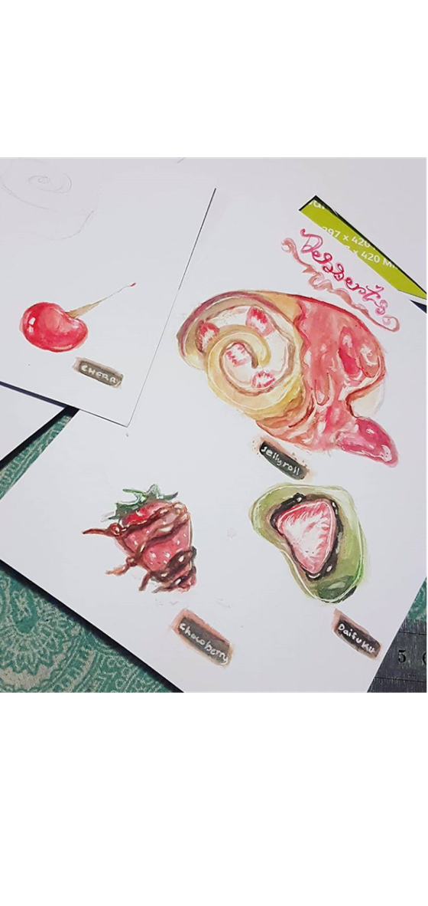

Watercolours
Here's a video of the painting process I go through with my watercolour portraits!
Tips and Tricks!
Always make sure to tape down your pages and prime your paper with water before starting :D
Some Paints might bleed into your sketch and turn out a muddy mess! so be careful with which one you choose.
Check out the list of materials for info on the ones i'm using here ^^ .
Some of my watercolour works!
I was feeling hungry so I thought I’d scribble up some desserts one day and then looked at reference pictures of food I liked as well as scour deviant art for jelly rolls. Used watercolours to get the different effects I wanted and my hunger magically disappeared afterwards

The base was done with watercolour, I sketched out a tiger and used water colour to block out the basic colours and then used Derwent colour pencils to do the finer details such as the hair and some details in the eyes etc.